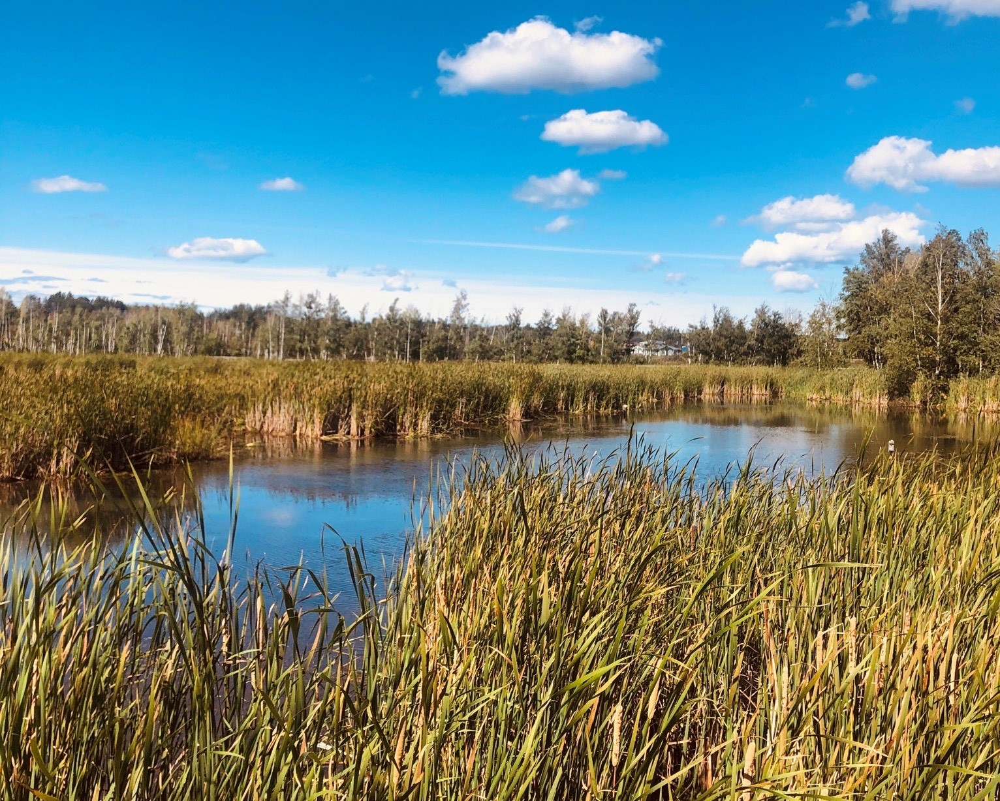

Sticking to my roots
I think that a common misconception that people have is that you have to travel a significant distance in order to feel like you are experiencing something new. I can say with full confidence after this summer that this couldn't be further from the truth.
I really wanted to make a point of exploring areas closer to my hometown that were both new and old to me. It was certainly an eye-opening experience seeing new places that were so close to me, and it was nostalgic to revisit areas I haven't been to in ages.
 The Fundy Trail Parkway offers many trail options, including coastal and deep woods trails (Kate Jenkins Photo)
The Fundy Trail Parkway offers many trail options, including coastal and deep woods trails (Kate Jenkins Photo)
Fundy Trail Parkway
The Fundy Trail is 2,559 hectare park which features a 30km parkway along the southern coast of New Brunswick. This beautiful area has options for everyone including hiking trails, lookout points and observations decks with views of the Bay of Fundy.
I went on this day trip with my mom as we wanted to experience a new place together. I thought I knew what to expect given that I had hiked many trails in Fundy National Park in Alma, New Brunswick, but I was severely mistaken. The views were unlike anything I had ever seen in the province and it almost felt like I was in another world. These feelings were strongest when looking at the water as it appeared more turquoise and tropical than any other area of the Bay of Funday I had ever experienced.
 Along the Fundy Trail Parkway, there are many observations decks and lookout points which only require a short walk from your parked vehicle (Kate Jenkins Photo)
Along the Fundy Trail Parkway, there are many observations decks and lookout points which only require a short walk from your parked vehicle (Kate Jenkins Photo)
I would like to go back next summer so that I can experience more trails and perhaps even hike the entirety of the Fundy Trail with my brothers. This would take several days and a fairly large portage, but I think that it would be worth it!
Waterfowl Park
Before moving to Ottawa and attending school at both Algonquin College and the University of Ottawa, I spent some time as a part-time student at Mount Allison University in Sackville, New Brunswick. I haven't had the chance to go back and visit this quaint university town since I left three years ago, until now.
I went for a day trip with some friends who attended school with me and we took a walk through Waterfowl Park. Nestled right next the downtown core, this park offers 3.5 kilometres of trails and boardwalks which you can walk in a loop. I really enjoyed this visit as I frequented the park often when I lived in Sackville.
Sackville's Waterfowl Park offers marsh views and the opportunity to spot many species of birds and other wild animals (Kate Jenkins Photo)I hope that one day I will have the ability to return to this park more often. It makes for a nice afternoon walk and isn't too strenuous. It is a nice option for people in your life who may have mobility issues.